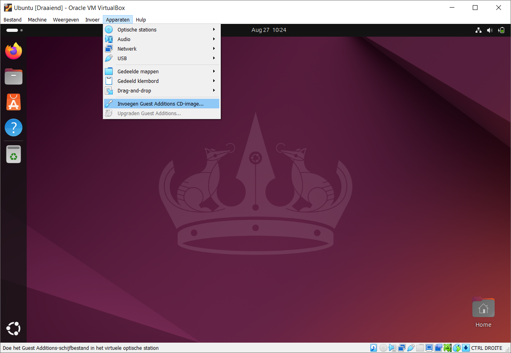
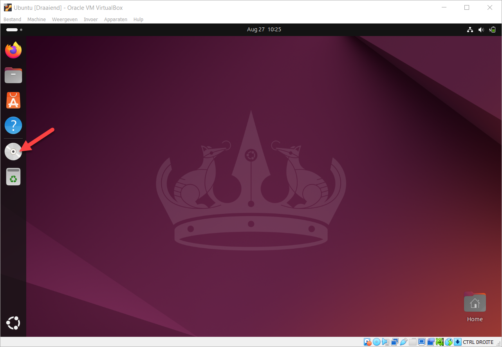
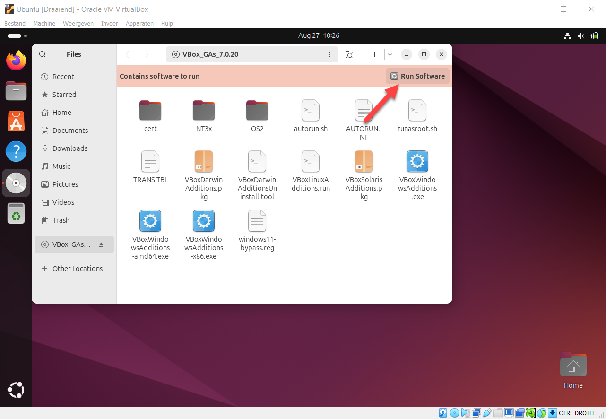
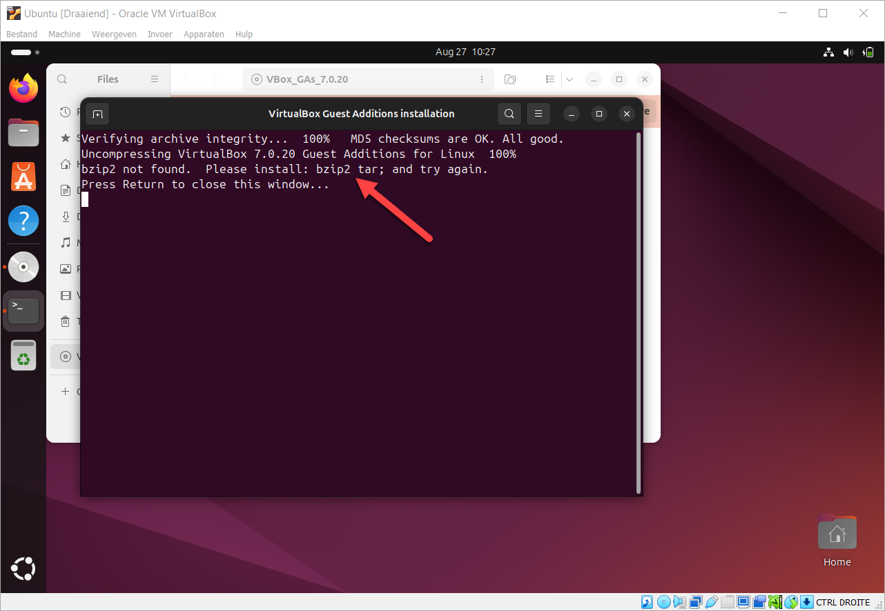
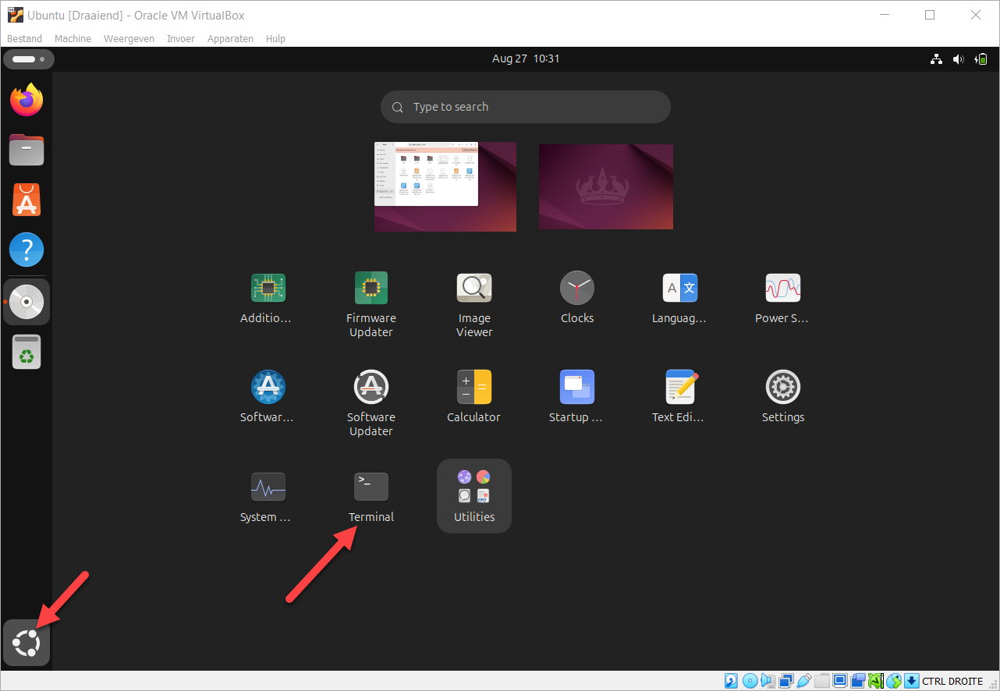
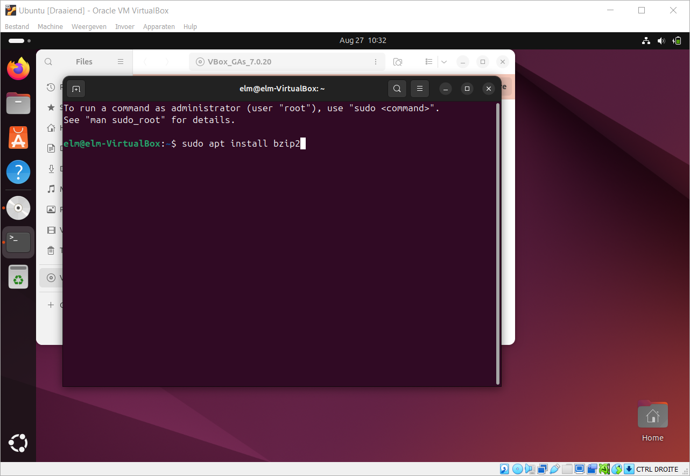
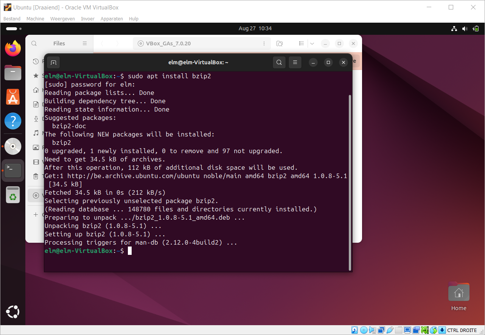
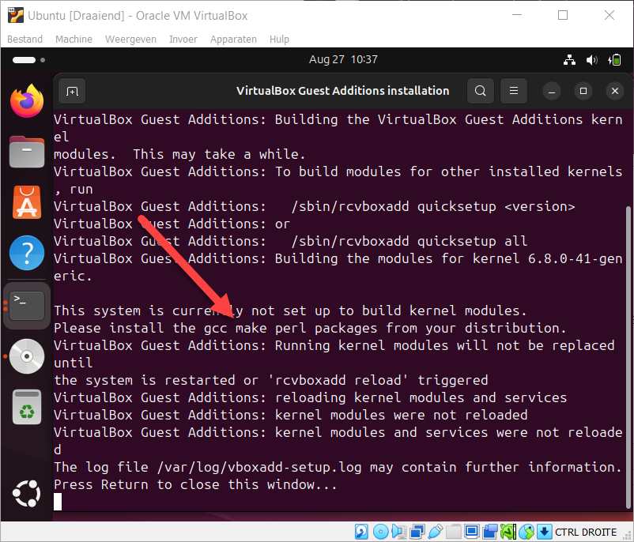
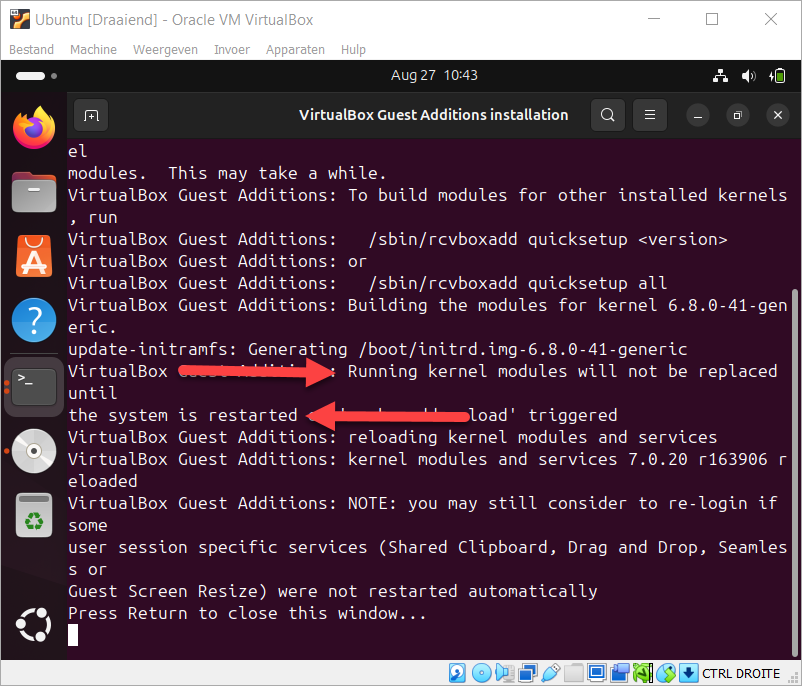
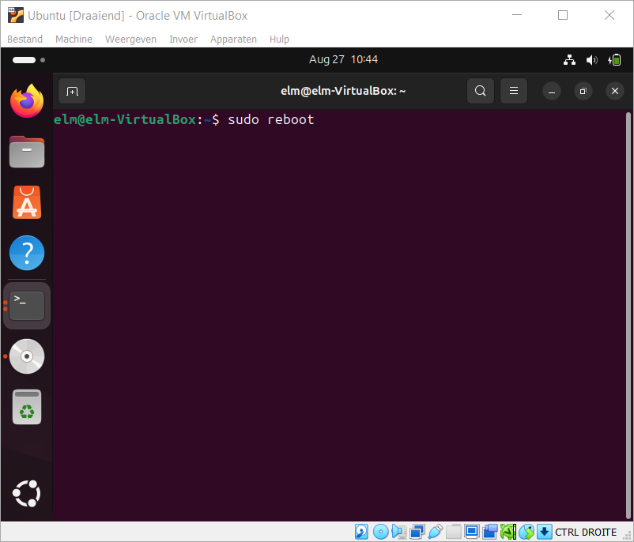

Guest Additions installeer je in de draaiende Ubuntu, en daarna schaalt het scherm mee met het venster en deel je één klembord tussen je host en je guest. De installatie loopt drie keer: twee keer stopt ze met een foutmelding over software die nog ontbreekt. Wat Guest Additions oplost en waarom het onderweg gebouwd moet worden, staat op Software in de guest.
Kies in het menu van de virtuele machine Apparaten → Invoegen Guest Additions CD image. VirtualBox legt dan een virtuele cd in het station van de guest.

In Ubuntu verschijnt er een schijfpictogram. Klik het open.

Klik op Run software. Gebeurt er niets, klik dan met de rechtermuisknop op
autorun.sh en kies Run as program.

De installatie stopt met een foutmelding die zegt welke programma's ze mist.

Open in Ubuntu een terminalvenster.

De eerste melding gaat over bzip2 en tar. Installeer ze:
sudo apt install bzip2 tarTik het exact over, met dezelfde spaties en dezelfde streepjes. Sudo is een ander
commando dan sudo, en Linux zegt dan dat het het niet kent.


Voer de installer opnieuw uit. Er verschijnt een hoop tekst en daarna een tweede foutmelding, deze keer over de programma's waarmee de stuurprogramma's gebouwd worden.

Installeer die drie in één keer:
sudo apt install gcc make perlVoer de installer een derde keer uit. Nu loopt hij door tot het einde.

De stuurprogramma's worden pas geladen wanneer de guest opnieuw opstart. Herstart hem vanuit de terminal:
sudo reboot
Na het herstarten schaalt het bureaublad mee wanneer je het venster groter maakt, en werkt knippen en plakken tussen je host en je guest.